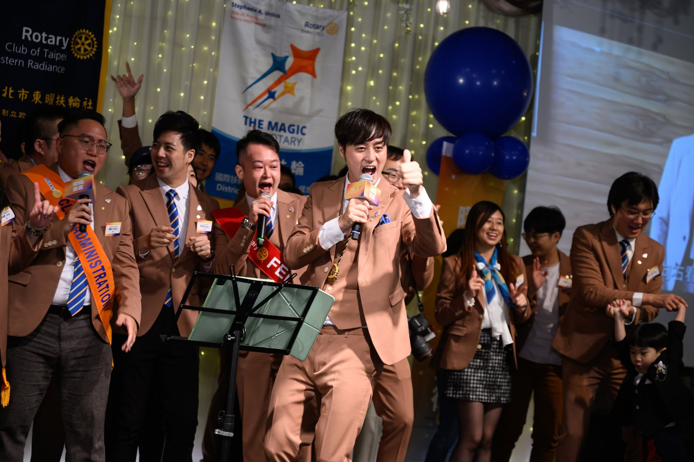
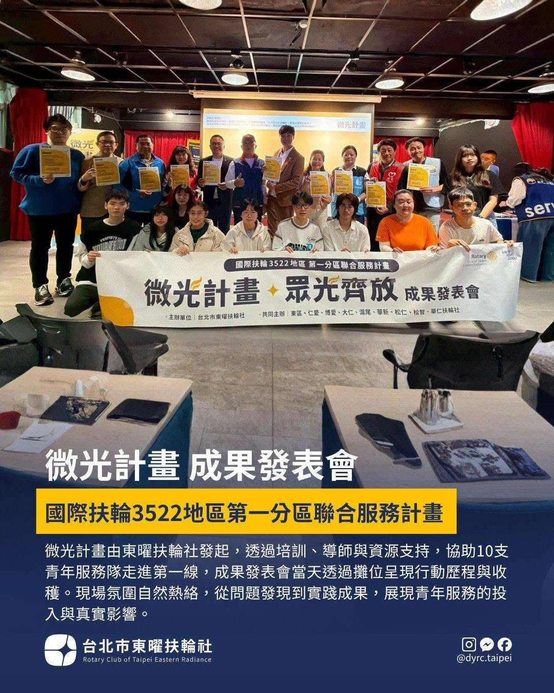
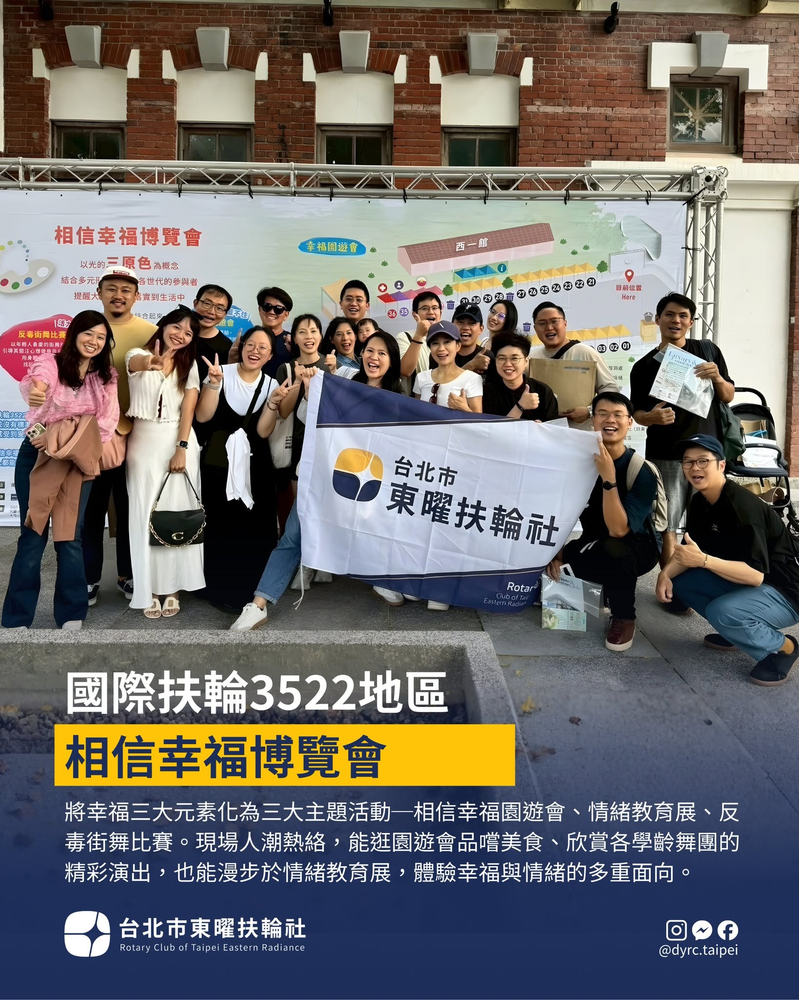
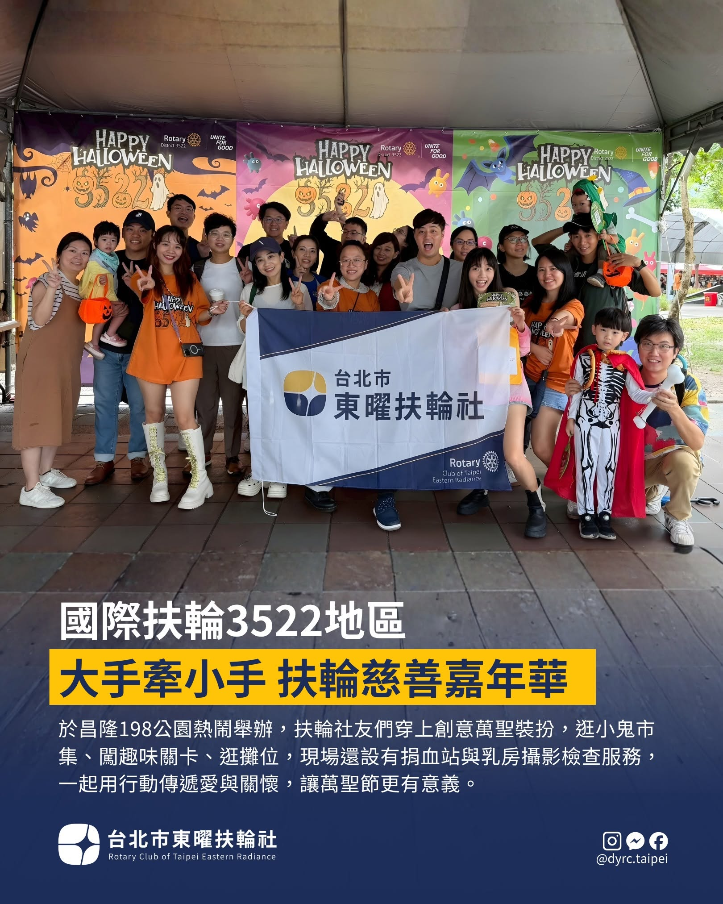
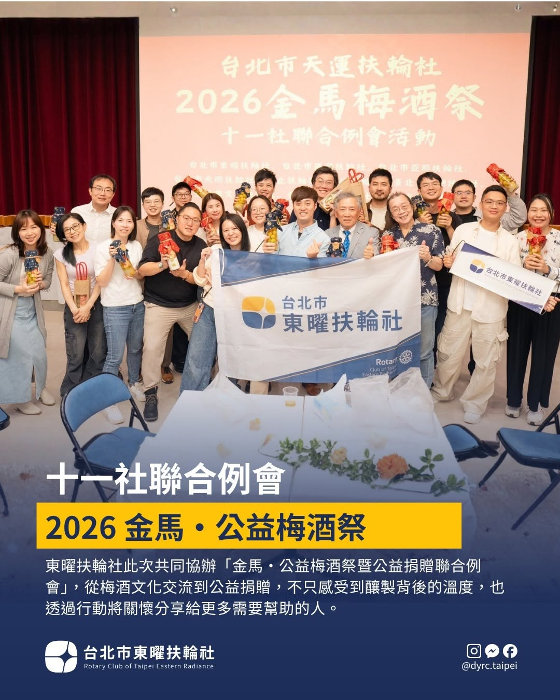

國際扶輪 3522 地區第一分區 · 創立於 2025 年
台北市東曜扶輪社 Rotary Club of Taipei Eastern Radiance
「東曜」寓意東方日出的希望與未來
關於我們
台北市東曜扶輪社創立於 2025 年，屬於國際扶輪 3522 地區第一分區。
「東曜」寓意東方日出的希望與未來，期待成為企業家與專業人士的交流平台，連結彼此，創造價值，並為社會帶來更多正向的貢獻與影響力，目前聚集了 30 幾位各領域優秀的年輕企業家與夥伴齊聚一堂。
歡迎加入台北市「東曜」扶輪社，讓我們一起將活成一道光，照亮彼此，也照亮更多這個世界需要的地方，東曜扶輪，閃耀扶輪：）

例會資訊
每個月兩次例會，包含社區服務、企業參訪、聯誼活動，以及地區豐富的許多活動，增進社友及寶尊眷彼此的情誼。
服務實績
-

「微光計畫」——服務性質社團補助暨培力計畫 與扶輪 3522 地區第一分區、輔仁大學課外活動指導組合辦，提供青年服務隊補助、培力工作坊與導師制度，協助服務隊走進第一線。 -

相信幸福博覽會相信幸福園遊會 情緒教育展 反毒街舞比賽將幸福三大元素化為三大主題活動，現場涵蓋園遊會市集、學齡舞團演出與情緒教育體驗。 -

大手牽小手 扶輪慈善嘉年華 昌隆 198 公園萬聖節主題慈善園遊會，逛市集、闖關卡之餘，現場並設有捐血站與乳房攝影檢查服務。 -

十一社聯合例會——2026 金馬・公益梅酒祭 與地區 11 個扶輪社共同協辦「金馬・公益梅酒祭暨公益捐贈聯合例會」，透過文化交流傳遞公益關懷。
服務領域
呼應國際扶輪七大焦點領域
- 和平與衝突預防
- 疾病預防與治療
- 水資源與衛生
- 母親與兒童健康
- 基礎教育與識字
- 經濟與社區發展
- 支持環境保護
什麼是扶輪
國際扶輪（Rotary International）於 1905 年由美國芝加哥律師保羅·哈里斯（Paul Harris）創立，是全球歷史最悠久的服務性社團組織之一，目前於全球近乎每個國家與地區設有分社，會員超過 120 萬人，扶輪社超過 45,000 個。
扶輪社員透過職業人士與社區領袖的情誼與合作，投入人道服務、促進正直誠信，並致力於增進世界了解、親善與和平——這也是台北市東曜扶輪社作為國際扶輪 3522 地區第一分區一員，持續在地實踐的核心精神。
座右銘
Service Above Self（超我服務）
四大服務範圍
- 社內服務
- 職業服務
- 社區服務
- 國際服務
四大考驗
扶輪社員面對所思、所言、所行的每一件事，都以「四大考驗」自我檢視：
- 是否一切屬於真實？
- 是否各方得到公平？
- 能否促進親善友誼？
- 能否兼顧彼此利益？
四大考驗由扶輪社員 Herbert J. Taylor 於 1932 年提出，1943 年正式為國際扶輪採用，是全球扶輪社共通的行事準則，並非本社專屬創作。
Contact Information
- Address
- 台北市中山區林森北路 50 號 8 樓之 6
- dyrc.taipei@gmail.com
- @dyrc.taipei